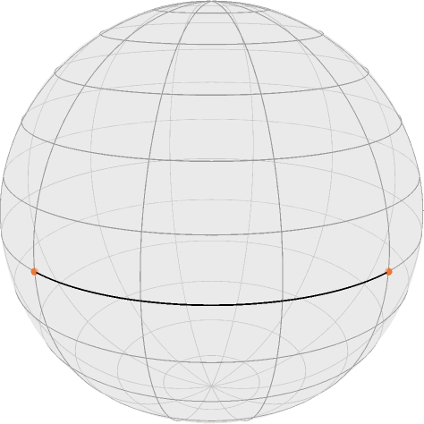
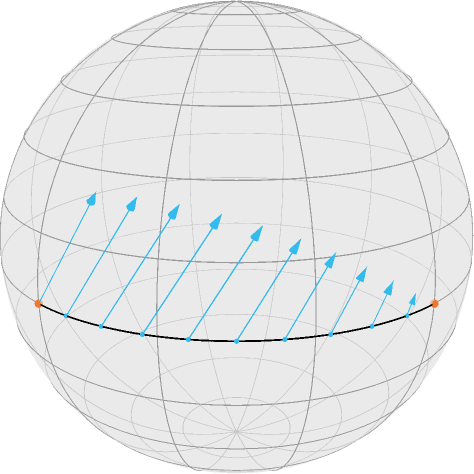
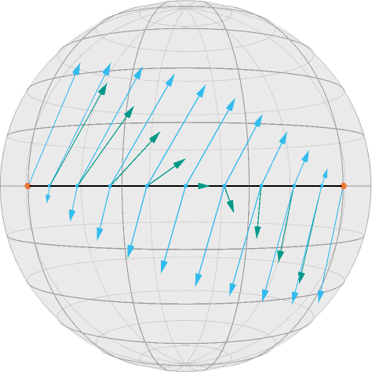

Illustration of Jacobi Fields
This tutorial illustrates the usage of Jacobi Fields within Manopt.jl. For this tutorial you should be familiar with the basic terminology on a manifold like the exponential and logarithmic map as well as geodesics.
We first initialize the manifold
using Manoptand we define some colors from Paul Tol
using Colors
black = RGBA{Float64}(colorant"#000000")
TolVibrantOrange = RGBA{Float64}(colorant"#EE7733")
TolVibrantCyan = RGBA{Float64}(colorant"#33BBEE")
TolVibrantTeal = RGBA{Float64}(colorant"#009988")Assume we have two SnPoints on the equator of the Sphere(2) $\mathcal M = \mathbb S^2$
M = Sphere(2)
x,y = [ SnPoint([1.,0.,0.]), SnPoint([0.,1.,0.])]2-element Array{SnPoint{Float64},1}:
Sn([1.0, 0.0, 0.0])
Sn([0.0, 1.0, 0.0])their connecting geodesic (sampled at 100 points)
geodesicCurve = geodesic(M,x,y,100);
asyResolution = 2looks as follows using renderAsymptote with the asyExportS2Signals export
renderAsymptote("jacobiGeodesic.asy",asyExportS2Signals;
render = asyResolution,
curves=[geodesicCurve], points = [ [x,y] ],
colors=Dict(:curves => [black], :points => [TolVibrantOrange]),
dotSize = 3.5, lineWidth = 0.75, cameraPosition = (1.,1.,.5)
)
where $x$ is on the left. Then this tutorial solves the following task:
Given a direction $\xi_x\in T_x\mathcal M$, for example the SnTVector
ξx = SnTVector([0.,0.4,0.5])SnT([0.0, 0.4, 0.5])we move the start point $x$ into, how does any point on the geodesic move?
Or mathematically: Compute $D_x g(t; x,y)$ for some fixed $t\in[0,1]$ and a given direction $\xi_x$. Of course two cases are quite easy: For $t=0$ we are in $x$ and how $x$ “moves” is already known, so $D_x g(0;x,y) = \xi$. On the other side, for $t=1$, $g(1; x,y) = y$ which is fixed, so $D_x g(1; x,y)$ is the zero tangent vector (in $T_y\mathcal M$).
For all other cases we employ a jacobiField, which is a (tangent) vector field along the geodesic given as follows: The geodesic variation $\Gamma_{g,\xi}(s,t)$ is defined for some $\varepsilon > 0$ as
Intuitively we make a small step $s$ into direction $\xi$ using the geodesic $g(\cdot; x,\xi)$ and from $z=g(s; x,\xi)$ we follow (in $t$) the geodesic $g(\cdot; z,y)$. The corresponding Jacobi field~(J_{g,\xi}) along~(g(\cdot; x,y) is given
which is an ODE and we know the boundary conditions $J_{g,\xi}(0)=\xi$ and $J_{g,\xi}(t) = 0$. In symmetric spaces we can compute the solution, since the system of ODEs decouples, see for example do Carmo, Chapter 4.2. Within Manopt.jl this is implemented as jacobiField(M,x,y,t,ξ[,β]), where the optional parameter (function) β specifies, which Jacobi field we want to evaluate and the one used here is the default.
We can hence evaluate that on the points on the geodesic at
T = [0:0.1:1.0...]namely
Z = geodesic(M,x,y,T)the geodesic moves as
ηx = jacobiField.(Ref(M), Ref(x), Ref(y), T, Ref(ξx) )11-element Array{SnTVector{Float64},1}:
SnT([0.0, 0.4, 0.5])
SnT([-0.05631640741448304, 0.35556780261424964, 0.4938441702975689])
SnT([-0.09888543819998306, 0.3043380852144492, 0.47552825814757677])
SnT([-0.12711733992707303, 0.249481826772743, 0.4455032620941839])
SnT([-0.14106846055019354, 0.1941640786499874, 0.4045084971874737])
SnT([-0.14142135623730948, 0.1414213562373095, 0.35355339059327373])
SnT([-0.1294427190999916, 0.09404564036679572, 0.29389262614623657])
SnT([-0.10692078290260415, 0.05447885996874564, 0.2269952498697734])
SnT([-0.07608452130361228, 0.024721359549995794, 0.15450849718747367])
SnT([-0.0395075336238055, 0.006257378601609233, 0.07821723252011542])
SnT([0.0, 0.0, 0.0]) which can also be called using DxGeo. We can add to the image above by creating extended tangent vectors TVectorE the include their base points
Vx = TVectorE.(ηx,Z)11-element Array{TVectorE{SnTVector{Float64},SnPoint{Float64}},1}:
SnT([0.0, 0.4, 0.5])E_Sn([1.0, 0.0, 0.0])
SnT([-0.05631640741448304, 0.35556780261424964, 0.4938441702975689])E_Sn([0.9876883405951378, 0.15643446504023087, 0.0])
SnT([-0.09888543819998306, 0.3043380852144492, 0.47552825814757677])E_Sn([0.9510565162951536, 0.30901699437494745, 0.0])
SnT([-0.12711733992707303, 0.249481826772743, 0.4455032620941839])E_Sn([0.8910065241883679, 0.45399049973954675, 0.0])
SnT([-0.14106846055019354, 0.1941640786499874, 0.4045084971874737])E_Sn([0.8090169943749475, 0.5877852522924731, 0.0])
SnT([-0.14142135623730948, 0.1414213562373095, 0.35355339059327373])E_Sn([0.7071067811865476, 0.7071067811865475, 0.0])
SnT([-0.1294427190999916, 0.09404564036679572, 0.29389262614623657])E_Sn([0.5877852522924731, 0.8090169943749475, 0.0])
SnT([-0.10692078290260415, 0.05447885996874564, 0.2269952498697734])E_Sn([0.45399049973954686, 0.8910065241883678, 0.0])
SnT([-0.07608452130361228, 0.024721359549995794, 0.15450849718747367])E_Sn([0.30901699437494745, 0.9510565162951536, 0.0])
SnT([-0.0395075336238055, 0.006257378601609233, 0.07821723252011542])E_Sn([0.15643446504023092, 0.9876883405951378, 0.0])
SnT([0.0, 0.0, 0.0])E_Sn([6.123233995736766e-17, 1.0, 0.0]) and add that as one further set to the Asymptote export.
renderAsymptote("jacobiGeodesicDxGeo.asy",asyExportS2Signals;
render = asyResolution,
curves=[geodesicCurve], points = [ [x,y], Z], tVectors = [Vx],
colors=Dict(
:curves => [black],
:points => [TolVibrantOrange,TolVibrantCyan],
:tvectors => [TolVibrantCyan]
),
dotSizes = [3.5,2.], lineWidth = 0.75, cameraPosition = (1.,1.,.5)
)
If we further move the end point, too, we can derive that Differential in direction
ξy = SnTVector([0.2,0.,-0.5])
ηy = DyGeo.(Ref(M),Ref(x),Ref(y),T,Ref(ξy))
Vy = TVectorE.(ηy,Z)11-element Array{TVectorE{SnTVector{Float64},SnPoint{Float64}},1}:
SnT([0.0, -0.0, 0.0])E_Sn([1.0, 0.0, 0.0])
SnT([0.0031286893008046165, -0.01975376681190275, -0.07821723252011542])E_Sn([0.9876883405951378, 0.15643446504023087, 0.0])
SnT([0.012360679774997897, -0.03804226065180614, -0.15450849718747367])E_Sn([0.9510565162951536, 0.30901699437494745, 0.0])
SnT([0.02723942998437282, -0.053460391451302075, -0.2269952498697734])E_Sn([0.8910065241883679, 0.45399049973954675, 0.0])
SnT([0.04702282018339786, -0.0647213595499958, -0.29389262614623657])E_Sn([0.8090169943749475, 0.5877852522924731, 0.0])
SnT([0.07071067811865475, -0.07071067811865474, -0.35355339059327373])E_Sn([0.7071067811865476, 0.7071067811865475, 0.0])
SnT([0.0970820393249937, -0.07053423027509677, -0.4045084971874737])E_Sn([0.5877852522924731, 0.8090169943749475, 0.0])
SnT([0.12474091338637151, -0.06355866996353651, -0.4455032620941839])E_Sn([0.45399049973954686, 0.8910065241883678, 0.0])
SnT([0.1521690426072246, -0.049442719099991546, -0.47552825814757677])E_Sn([0.30901699437494745, 0.9510565162951536, 0.0])
SnT([0.1777839013071248, -0.02815820370724152, -0.4938441702975689])E_Sn([0.15643446504023092, 0.9876883405951378, 0.0])
SnT([0.2, 0.0, -0.5])E_Sn([6.123233995736766e-17, 1.0, 0.0]) and we can look at the total effect, where the TVectorEs even verify that only tangent vectors are added that have a common base point
Vb = Vx .+ Vy11-element Array{TVectorE{SnTVector{Float64},SnPoint{Float64}},1}:
SnT([0.0, 0.4, 0.5])E_Sn([1.0, 0.0, 0.0])
SnT([-0.05318771811367842, 0.33581403580234687, 0.41562693777745346])E_Sn([0.9876883405951378, 0.15643446504023087, 0.0])
SnT([-0.08652475842498517, 0.26629582456264306, 0.3210197609601031])E_Sn([0.9510565162951536, 0.30901699437494745, 0.0])
SnT([-0.09987790994270021, 0.19602143532144092, 0.2185080122244105])E_Sn([0.8910065241883679, 0.45399049973954675, 0.0])
SnT([-0.09404564036679568, 0.12944271909999158, 0.11061587104123716])E_Sn([0.8090169943749475, 0.5877852522924731, 0.0])
SnT([-0.07071067811865472, 0.07071067811865477, 0.0])E_Sn([0.7071067811865476, 0.7071067811865475, 0.0])
SnT([-0.032360679774997916, 0.02351141009169895, -0.11061587104123716])E_Sn([0.5877852522924731, 0.8090169943749475, 0.0])
SnT([0.017820130483767363, -0.009079809994790876, -0.2185080122244105])E_Sn([0.45399049973954686, 0.8910065241883678, 0.0])
SnT([0.07608452130361233, -0.024721359549995752, -0.3210197609601031])E_Sn([0.30901699437494745, 0.9510565162951536, 0.0])
SnT([0.1382763676833193, -0.021900825105632286, -0.41562693777745346])E_Sn([0.15643446504023092, 0.9876883405951378, 0.0])
SnT([0.2, 0.0, -0.5])E_Sn([6.123233995736766e-17, 1.0, 0.0]) renderAsymptote("jacobiGeodesicResult.asy",asyExportS2Signals;
render = asyResolution,
curves=[geodesicCurve], points = [ [x,y], Z], tVectors = [Vx,Vy,Vb],
colors=Dict(
:curves => [black],
:points => [TolVibrantOrange,TolVibrantCyan],
:tvectors => [TolVibrantCyan,TolVibrantCyan,TolVibrantTeal]
),
dotSizes = [3.5,2.], lineWidth = 0.75, cameraPosition = (1.,1.,0.)
)
Literature
- [doCarmo1992] do Carmo, M. P.:
Riemannian Geometry , Mathematics: Theory & Applications, Birkhäuser Basel, 1992, ISBN: 0-8176-3490-8 - [BergmannGousenbourger2018]
Bergmann, R.; Gousenbourger, P.-Y.:
A variational model for data fitting on manifolds by minimizing the acceleration of a Bézier curve , Frontiers in Applied Mathematics and Statistics, 2018. doi: 10.3389/fams.2018.00059